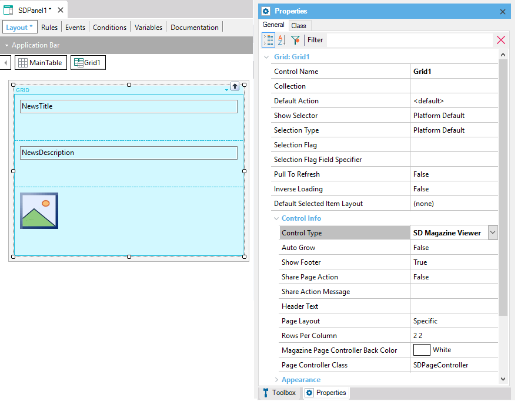
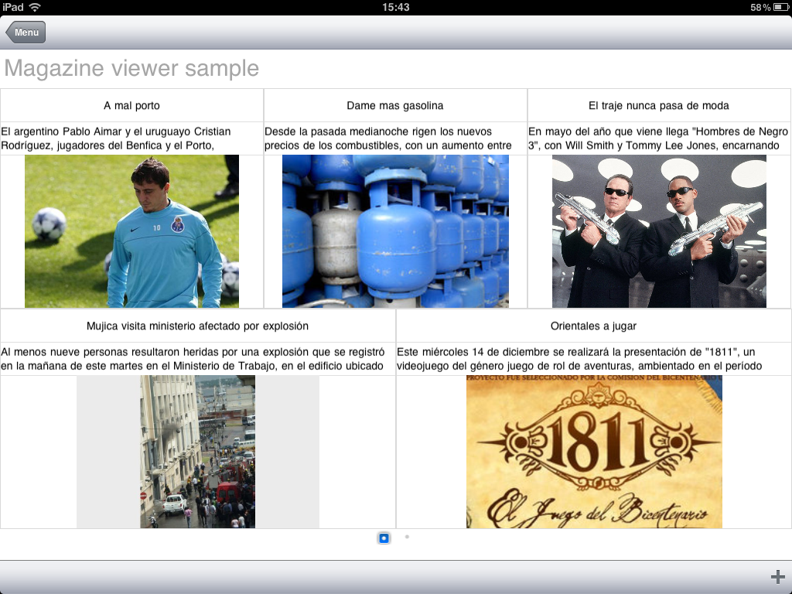

Tablets brought with them a new way of viewing information that has become extremely popular. It consists simply of displaying or providing interaction with data as it is done in a newspaper, magazine or catalog of products, recipes, and so on.
That is to say, the tablet is the physical object (similarly to a newspaper, magazine, catalog) in which information is displayed, with various layouts to be applied to data. In addition, each page shows more than one news article, product, etc.
In general, pages can be turned with the same gesture we make when reading a printed newspaper (they are usually implemented as a flip). Being digital, the tablet provides the additional benefit of displaying only part of a news article on screen and zooming in with a touch (in a printed version, this would be the equivalent of “Continued on page X”).
Magazine Viewer
It displays information in Magazine format, which doesn’t mean that only news articles can be included. Basically, it can be used to show any product catalog, recipes, songs, and so on. Even a list of Clients could be shown in this way, as this is only a new way to display a list of data in a certain desired format.
How to use it
The Magazine Viewer must be associated with a Grid by modifying its Control Type property.

Properties
Example In the example below, a change has been made to the control type property of the list in a trn that has the wwsd applied. The image shows how the control displays the default data. 
|
| Backlinks | ||
| Control Type property | Category:Control Types for Smart Devices | Toc:Mobile Applications Development |
| PageChanged event |